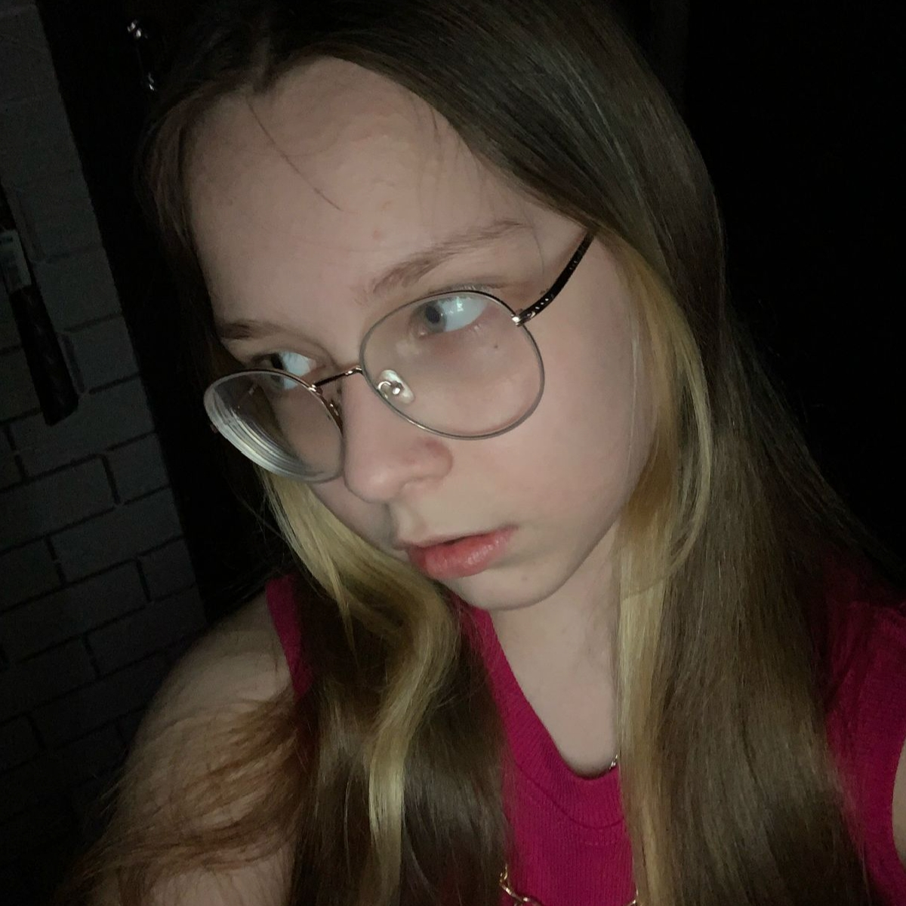
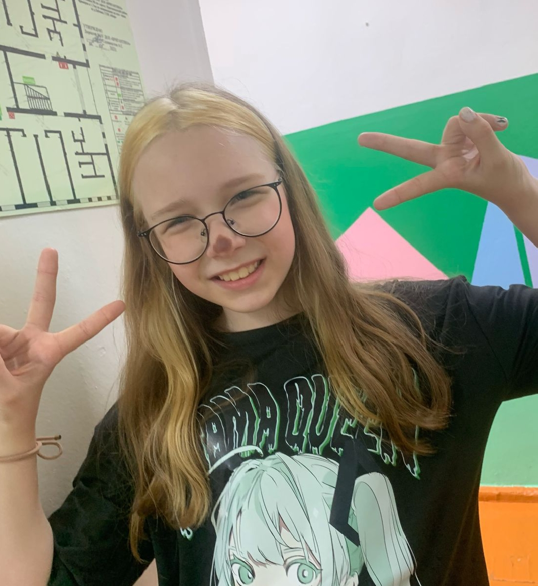

Полина Назарова - известная как просто 'поляна', 'польша', для своих просто 'атомная бомба'.
Она в музыкалке на 5 учится
И этого достаточно чтобы выносить Камиле мозг


Никак, такими рождаются
Полина Назарова - известная как просто 'поляна', 'польша', для своих просто 'атомная бомба'. Однозначно Полина является первой кей попершей города Нефтекамска. Она киннит скз, если Вы не понимаете, что это означает - не страшно. Это означает, что вы старпёр, или просто Рома. Так же у Полины есть младший брат Мирон, которого она иногда бьёт, но очень сильно любит 🥰, любимая мама Вика и просто Руслик суслик, как она его называет. Нельзя не добавить, что не так давно у Полины появилась то ли троюродная то ли ещё какая-то старшая сестра - Камила. Это богиня немножко задолжала Полине карточки скз, из-за чего её кошмарит весь город Нефтекамск. И так же хочется отметить Полининого ещё какого-то младшего братишку - Марата. Бывает, что они сруться, но это они так свою любовь проявляют. Полина хороший человек, когда сытая.
БЕСТ ФРЕНДСАня